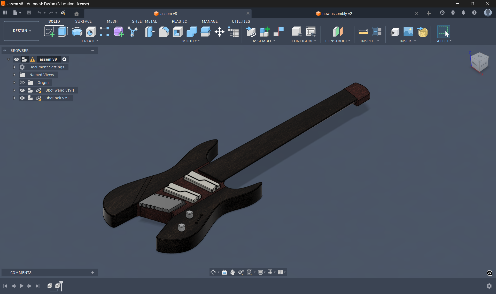
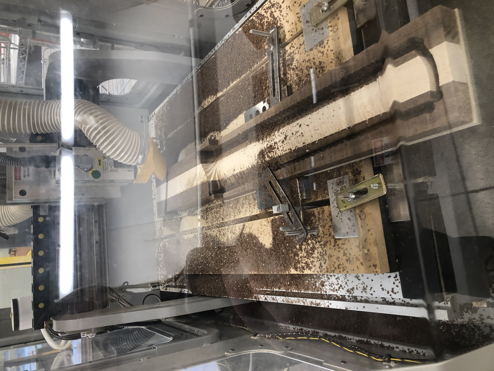
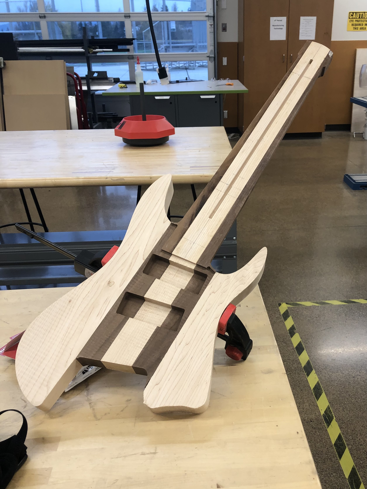
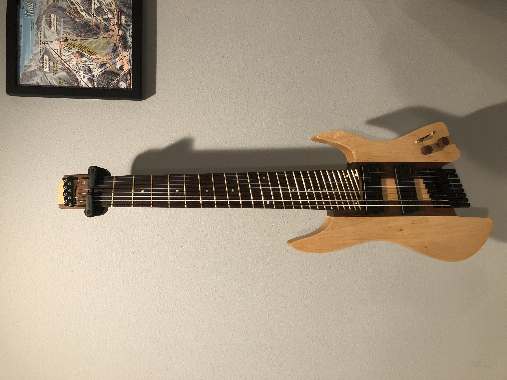
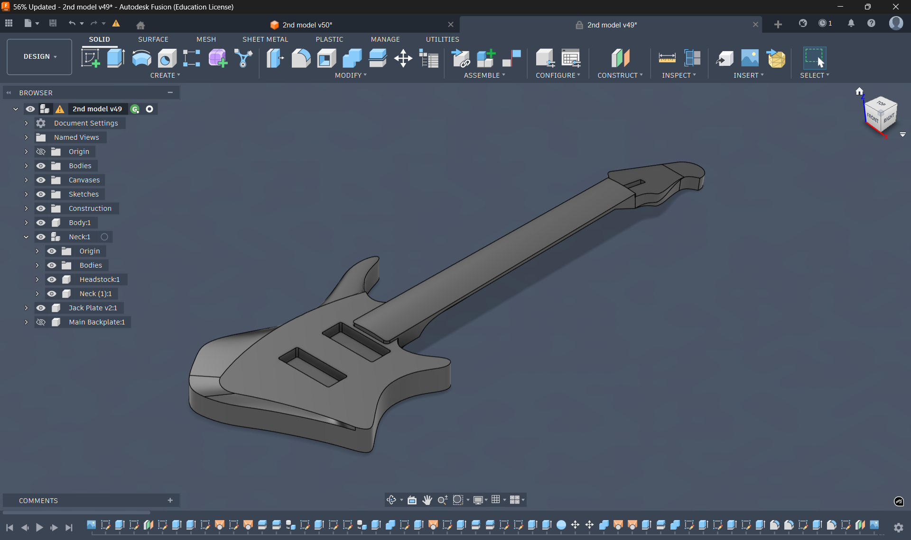
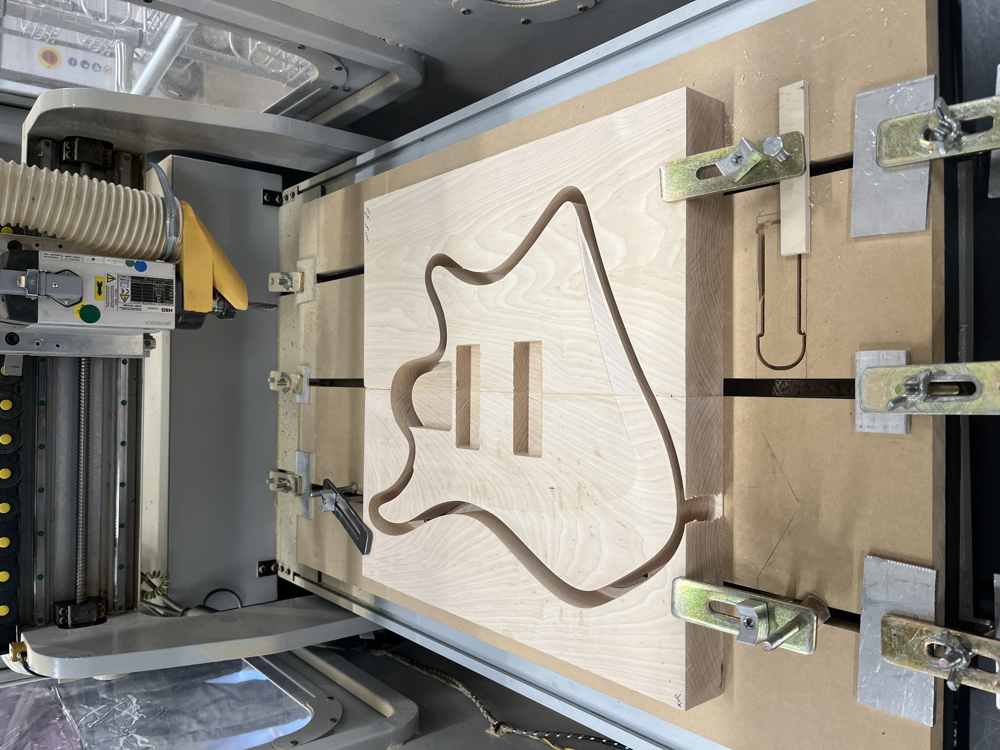
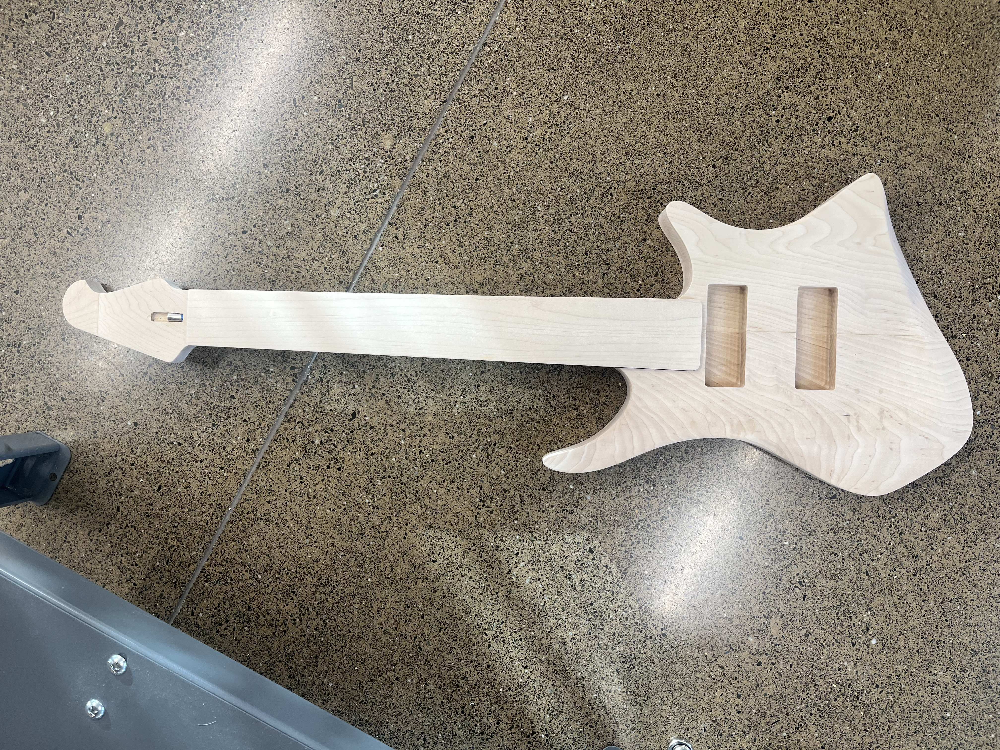
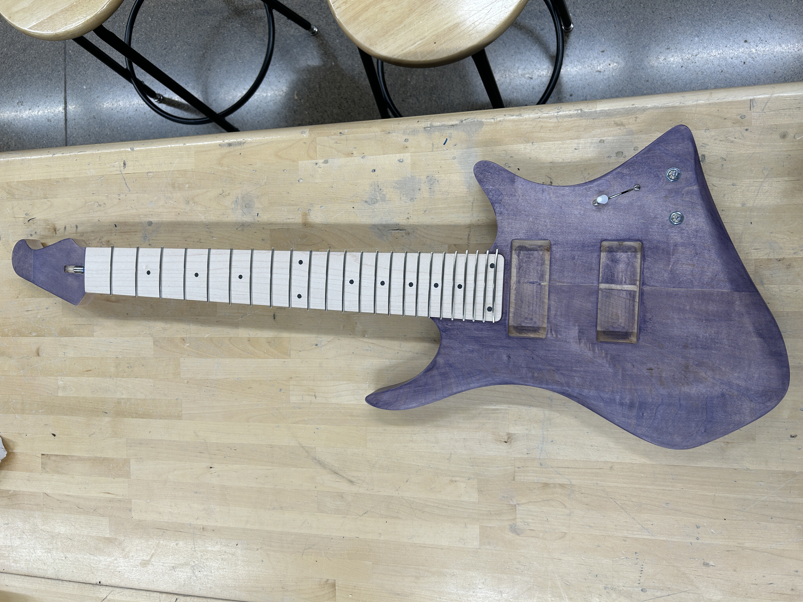
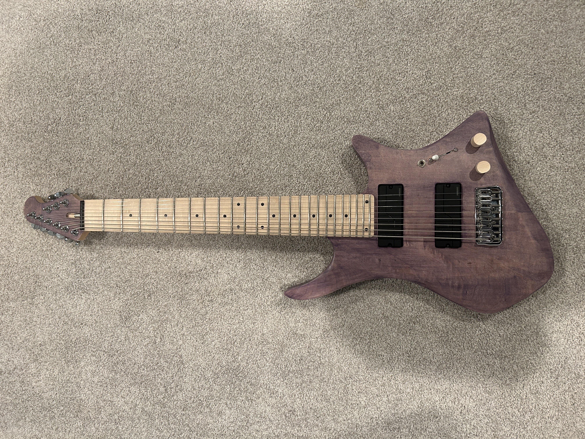
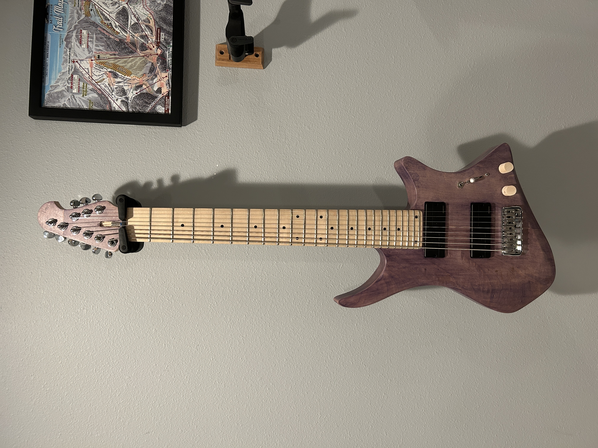

FEATURED PROJECT
THE EIGHT-STRING
A MULTI-YEAR BUILD OF A FULLY CUSTOM 8-STRING ELECTRIC GUITAR, FROM A BLANK CAD SKETCH TO A PLAYABLE INSTRUMENT. THEN I BUILT IT ALL AGAIN, THIS TIME WITH EVERYTHING THE FIRST ONE TAUGHT ME.
- 2 VERSIONS
- 8 STRINGS
- FUSION 360 CAD + CAM
- 3-AXIS CNC

Start in CAD
Everything began in Fusion 360. I modeled the body thickness, pickup pocket depth, neck pocket tolerances, bridge placement, and the internal cavity routing for the electronics, with the neck and body as separate parts in one assembly so I could check how they fit before cutting any wood.
The goals were simple to state and hard to meet: a design I could actually manufacture on a 3-axis CNC, with room for every piece of hardware, that would still play well.

CUTTING THE NECK

FIRST DRY FIT
From model to wood
I generated toolpaths for both roughing and finishing operations and designed fixtures to hold irregular geometry securely while the machine worked. Grain direction and stress regions drove how I oriented each piece, preserving stiffness and keeping tear-out to a minimum.
The first clamped dry fit was the moment the model became a real object I could pick up.

Strings on, truth revealed
With pickups installed, control circuitry wired, and signal continuity checked, version one was a working instrument. I tested structural stability under full string tension, tuning stability, sustain, and comfort. It held up under load.
It also taught me plenty. Playing it showed me where the ergonomics could be better, where the machining took longer than it should have, and which decisions I would make differently with a second try.

Back to the model
Version two started as a fresh design, not a patch. Reworking the body shape and the neck and headstock assembly in CAD let me apply what I learned about geometry and stiffness, and simplify the parts so they would be quicker and cleaner to machine.
The model grew to dozens of revisions before I was happy with it.

CUTTING THE BODY

BARE MAPLE
Cutting it better
The second time through, the process was smoother. Fixturing was simpler, the toolpaths were more efficient, and the parts came off the machine closer to finished. Bare maple, pickup pockets routed, neck seated: the shape was finally right.

STAIN + FRETS

FULLY STRUNG
Color, hardware, wiring
A purple stain brought out the grain, frets went in, and then came the hardware and electronics: tuners, bridge, pickups, switch, and controls, all wired up and checked for continuity before the strings went on.
Version one, version two
VERSION 1

VERSION 2
DESIGN OBJECTIVES
- CAD geometry and tolerances
- 3-axis CNC manufacturability
- Electronics and hardware fitment
- Playability and acoustic validation
TESTING + VALIDATION
Pickups installed and control circuitry wired, with signal continuity validated. Tested for structural stability under full string tension, tuning stability, sustain, and ergonomic comfort. Results confirmed stable performance under load.
ENGINEERING REFLECTION
This project reinforced the relationship between geometry and stiffness, material selection and vibrational response, and manufacturability-driven design. The redesign improved ergonomics, machining efficiency, and playability.